În stînga este slide-ul din curs, în dreapta aceeași figură sau același tabel, calculat în browser din aceleași date. Butonul ▶ modifică parametrul pas cu pas; casetele „Exemplu rezolvat” refac calculul cu cifrele capitolului.
Bule în istorie · Bule raționale și rădăcini explozive · Modelul LPPL · Estimarea · Încrederea obținută din multe ferestre · O evaluare riguroasă a prognozei crahurilor
Bule în istorie
Șase creșteri și crahuri în datele cursului
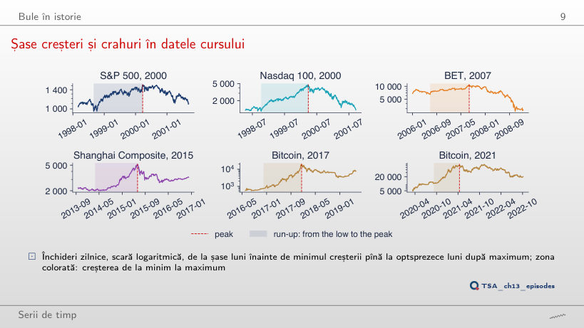
Răspuns
Bitcoin, 2017: cea mai mică închidere din primele 91 de zile este cu 64% sub maximul din 16 decembrie 2017; urmează Bitcoin 2021 (50%), Shanghai (43%) și Nasdaq 100 (36%), iar S&P 500 scade doar cu 11%. La 12 luni ordinea rămîne aproape aceeași, dar S&P 500 ajunge la 27% și Nasdaq 100 la 66%: o parte din cădere vine încet.
Interpretarea celor șase episoade
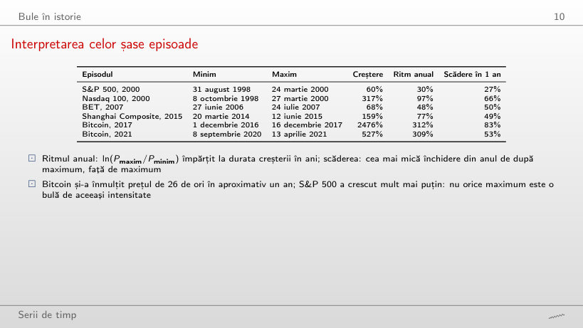
Răspuns
Cu 37% sub maximum, mai puțin decît scăderea maximă de 49% din aceleași 18 luni: după minimul din ianuarie 2016 prețul a revenit parțial. Cele două măsuri răspund la întrebări diferite: cît de mare a fost căderea și unde a rămas prețul.
Bule raționale și rădăcini explozive
Exemplu rezolvat: o bulă care se poate sparge
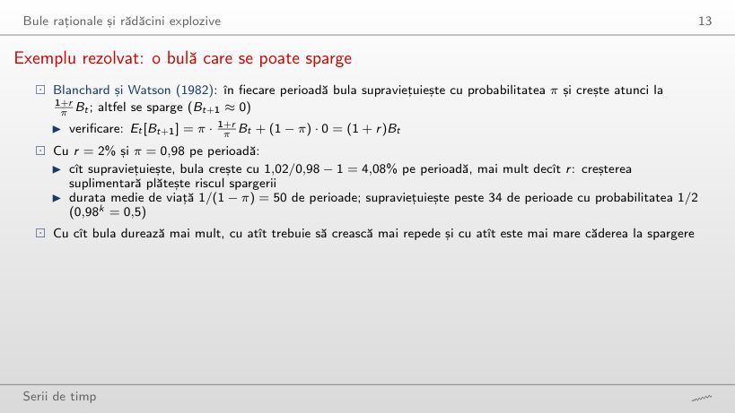
Exemplu rezolvat
Răspuns
Cu 1,02/0,90 − 1 = 13,3% pe perioadă, față de 4,08% pentru π = 0,98: cu cît spargerea este mai probabilă, cu atît creșterea pe perioadele de supraviețuire trebuie să fie mai mare, ca media să rămînă 1 + r. Durata medie de viață scade la 1/(1 − 0,90) = 10 perioade.
O bulă rațională simulată și trei rădăcini AR(1)
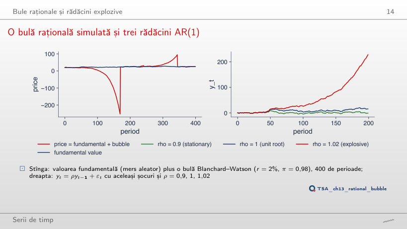
Răspuns
De 1,04¹⁰⁰ = 50,5 ori, față de 1,02¹⁰⁰ = 7,24: factorul crește exponențial cu numărul de perioade, deci dublarea ratei îl ridică la puterea a doua (7,24² ≈ 52, aproape de 50,5). Un șoc se dublează acum în 17,7 perioade, nu în 35.
SADF, GSADF și BSADF (1/2)
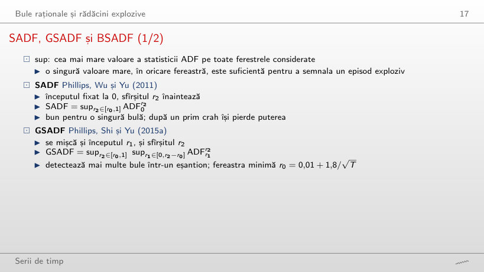
Exemplu rezolvat
Răspuns
În săptămîna 8 ianuarie 1999, cu peste un an înainte de maximul din martie 2000; SADF ajunge la 2,72. Testul ADF pe tot eșantionul (−1,27) nu respinge, pentru că prăbușirea din 2000–2002 trage statistica întregului eșantion în jos; supremumul pe ferestre evită această problemă.
SADF, GSADF și BSADF (2/2)
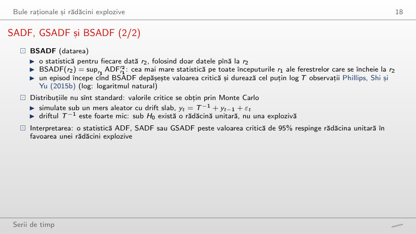
Exemplu rezolvat
Răspuns
Pe 4 decembrie 1998, a șaptea săptămînă la rînd peste valoarea critică: în timp real, regula lungimii minime confirmă un episod abia după log T ≈ 7 săptămîni, deși data lui de început rămîne 23 octombrie 1998. Sfîrșitul episodului (3 noiembrie 2000) se cunoaște și mai tîrziu.
Exemplu rezolvat: o fereastră din Nasdaq 100
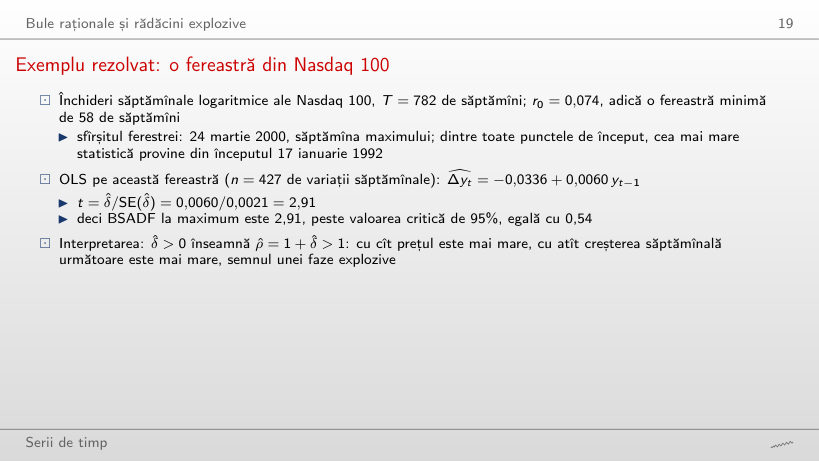
Exemplu rezolvat
Răspuns
Nu: BSADF este −0,20, sub valoarea critică 0,53; cea mai mare statistică provine acum din începutul eșantionului (5 ianuarie 1990). Odată ce fereastra include scăderea, prețurile mari nu mai sînt urmate de creșteri mari, iar δ̂ devine negativ pentru orice început.
Episoadele explozive ale Nasdaq 100, 1990–2004
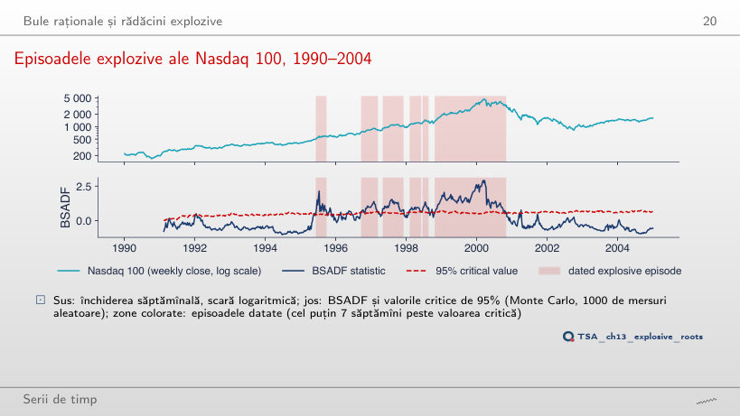
Răspuns
3: cele din septembrie 1996 – martie 1997 (26 de săptămîni), mai – decembrie 1997 (32) și octombrie 1998 – noiembrie 2000 (107). Episoadele scurte din 1995 și 1998 dispar; cu lungimea 1 BSADF ar data 17 episoade, multe de o săptămînă.
Interpretarea testelor pentru Nasdaq 100
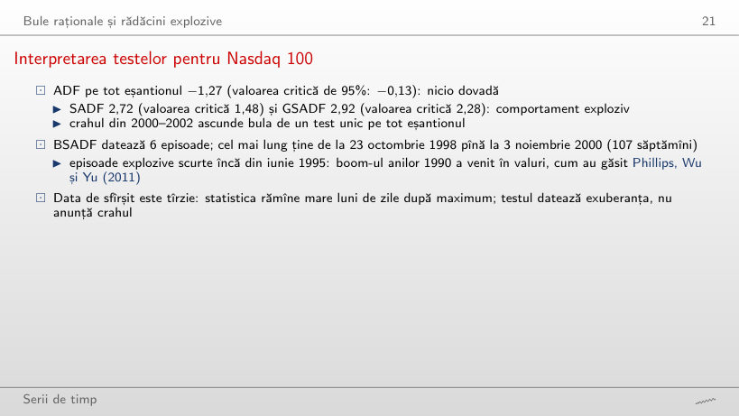
Răspuns
3: iulie – septembrie 1997, noiembrie 1998 – iulie 1999 și august 1999 – aprilie 2000. Cu valori critice mai mari, episodul lung din 1998–2000 se rupe în două și se termină în aprilie 2000, la o lună după maximum, nu în noiembrie 2000. SADF (2,72) și GSADF (2,92) rămîn peste valorile critice de 99% (1,92 și 2,86).
Bitcoin, BET și Shanghai: episoade datate
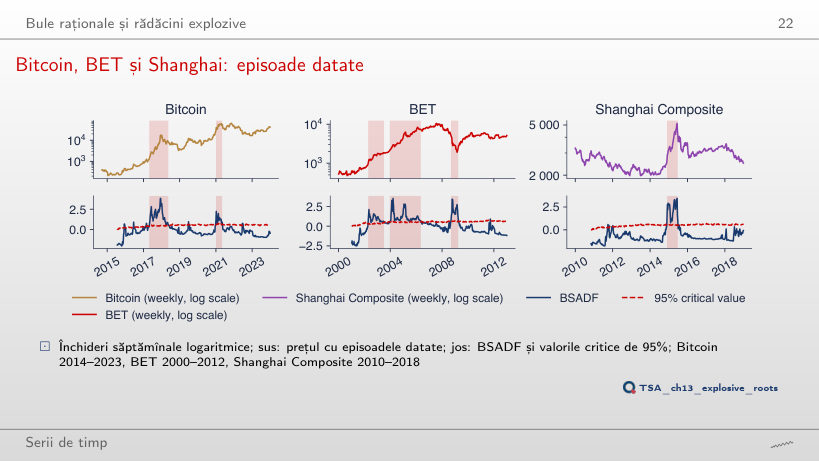
Răspuns
Da: BSADF este peste valoarea critică din 28 noiembrie 2014, de 26 de săptămîni la rînd, deci episodul este datat și încă în desfășurare. BSADF folosește doar datele pînă la fiecare dată, deci datarea începutului este posibilă în timp real; sfîrșitul (26 iunie 2015) apare doar după maximum.
Interpretarea celor trei piețe
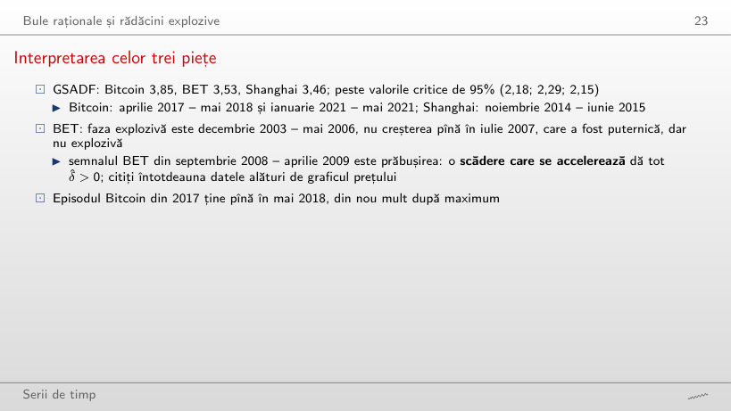
Răspuns
Da: Bitcoin 3,85 față de 2,63, BET 3,53 față de 2,86, Shanghai 3,46 față de 2,60. Episoadele datate se schimbă totuși: la BET rămîn cinci episoade scurte, iar la Bitcoin doar faza din 2017, ruptă în două.
Modelul LPPL
Creștere exponențială și creștere superexponențială
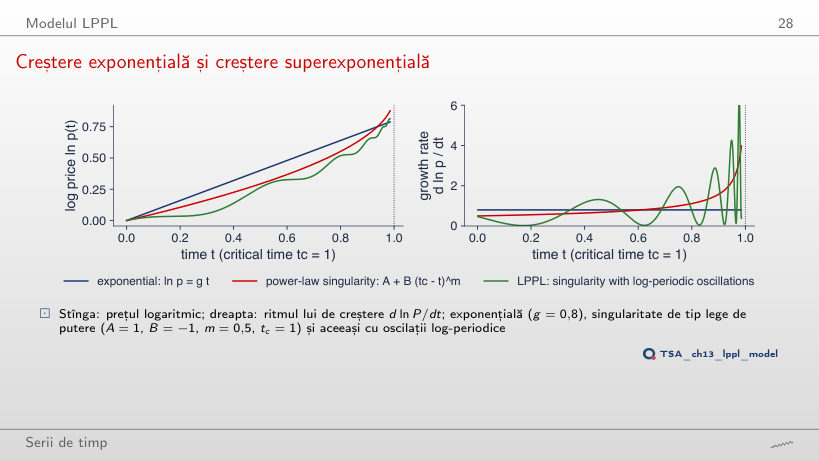
Răspuns
5,52, față de 3,98 pentru m = 0,5, deși la început ritmul este doar 0,20 (față de 0,50): un m mic ține creșterea plată multă vreme și o concentrează aproape de tc. Ritmul exponențial rămîne 0,8 pe tot drumul.
Oscilațiile log-periodice
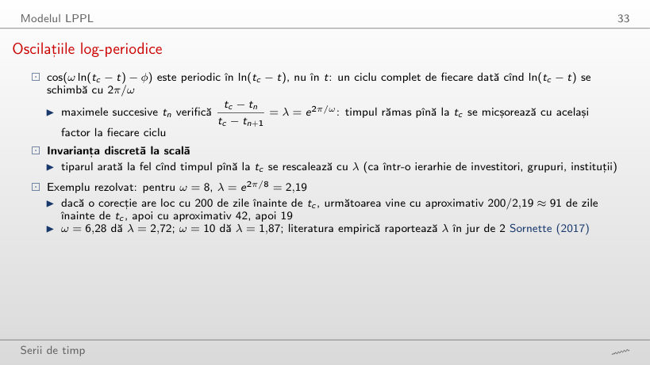
Exemplu rezolvat
Răspuns
λ = e2π/4 = 4,81: o corecție cu 200 de zile înainte de tc este urmată de una cu 42 de zile înainte, apoi cu 9. Un ω mic dă cicluri puține și rare; pentru ω = 8 factorul este 2,19.
Componentele ecuației LPPL
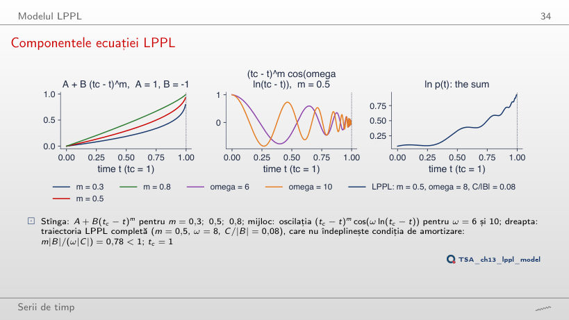
Răspuns
Nu: 0,5/(8 · 0,08) = 0,78 < 1. Deși |C| este mult mai mic decît |B|, termenul oscilant se înmulțește cu ω în derivată, iar cu ω = 8 oscilațiile ar face rata de hazard negativă în unele momente; condiția trece doar pentru C/|B| ≤ 0,0625 la m = 0,5 și ω = 8.
Exemplu rezolvat: o valoare LPPL calculată de mînă
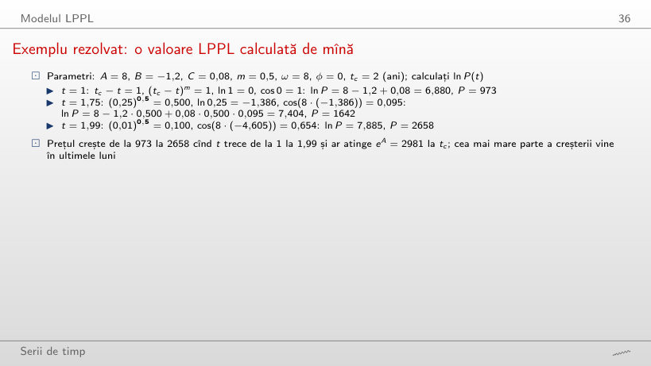
Exemplu rezolvat
Răspuns
Aproximativ 2234, față de 2658 pentru m = 0,5: un m mai mic lasă o parte mai mare din creștere pentru ultimele momente dinaintea lui tc, unde prețul atinge eA = 2981 pentru orice m. La t = 1 prețul este 973 pentru orice m, pentru că acolo tc − t = 1.
Restricțiile parametrilor: filtrul
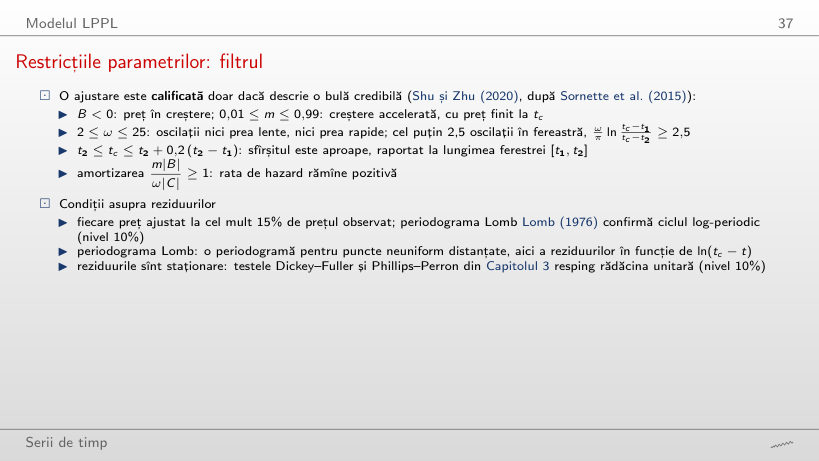
Exemplu rezolvat
Răspuns
4: S&P 500 și BET se opresc la ω = 1,0, marginea de jos a spațiului de căutare [1, 50]. Spațiul de căutare este mai larg decît filtrul: o ajustare poate avea cel mai mic SSR la o valoare pe care filtrul o respinge.
Estimarea
Peisajul funcției de cost
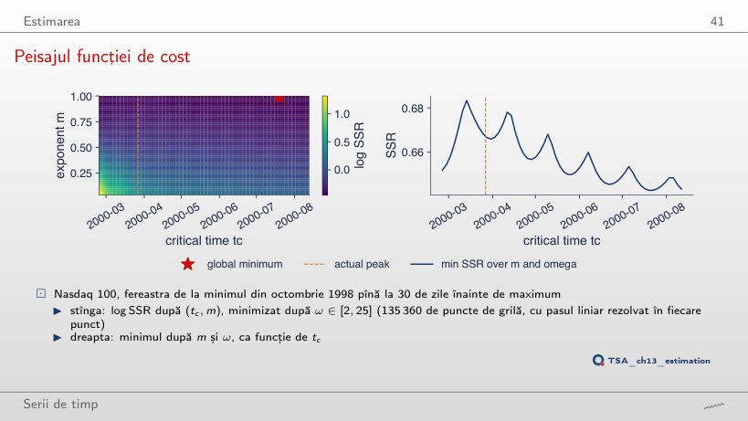
Răspuns
La 21 iunie 2000, tot după maximul real din 27 martie 2000, cu m = 0,99 și 4 minime locale. Doar la ω ≤ 3 minimul se mută la marginea grilei (25 februarie 2000), cu un raport SSR de 1,49; pentru ω ≤ 7 rezultatul este deja cel din curs (19 iulie 2000).
Exemplu rezolvat: ajustarea pentru Shanghai la sfîrșitul ferestrei
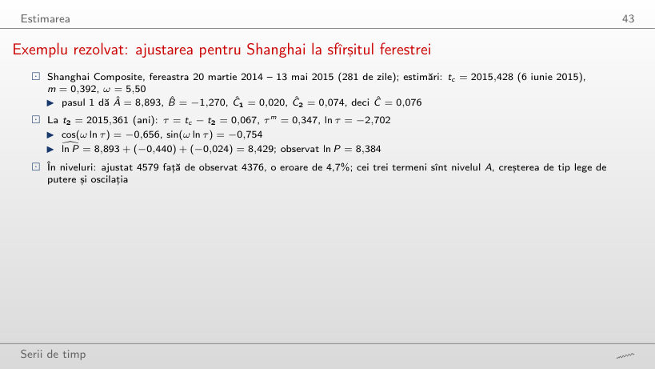
Exemplu rezolvat
Răspuns
Cu aproximativ 55%. Cu m și ω fixate, SSR are o vale îngustă în jurul estimării (+11% la 10 zile); peisajul din „Peisajul funcției de cost” este plat pentru că acolo m și ω se reestimează pentru fiecare tc și compensează mutarea.
Ajustări LPPL cu 30 de zile înainte de maximum
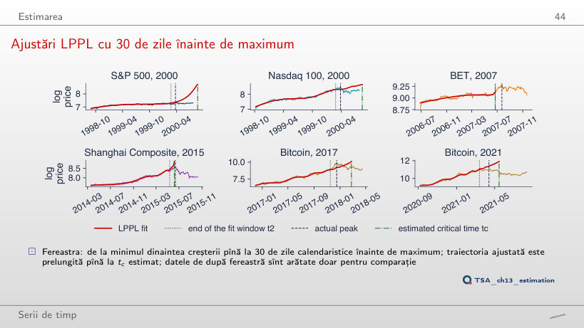
Răspuns
Doar Shanghai, cu t̂c la 11 zile după maximum. S&P 500 și Nasdaq 100 rămîn la m = 1 și la limita superioară a căutării (190 și 178 de zile după maximum); nici datele pînă la maximum nu fac din creșterea lor una superexponențială.
Interpretarea celor șase ajustări
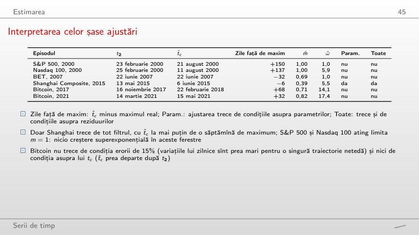
Răspuns
Una, Bitcoin 2017; Shanghai, singura calificată la 30 de zile, nu trece cu 90 de zile înainte. Calificarea unei ajustări depinde de data de sfîrșit a ferestrei, de aceea indicatorul folosește multe ferestre.
Încrederea obținută din multe ferestre
Multe ferestre, o singură dată de sfîrșit
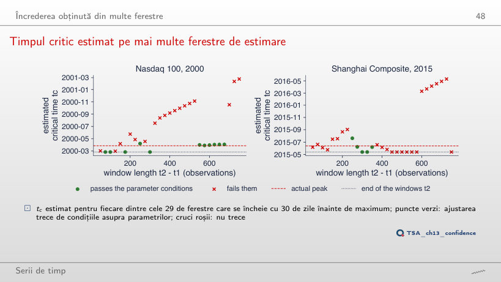
Răspuns
12 din 29, față de 11 cu limita 0,2; la Shanghai 7 față de 5. Pentru Nasdaq 100 condiția care elimină cele mai multe ferestre este cea asupra lui m (doar 69% o îndeplinesc), nu cea asupra lui tc.
Interpretarea ferestrelor
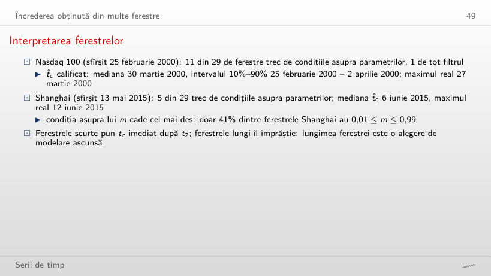
Răspuns
13% (2 din 15), față de 41% pe toate cele 29: în 13 dintre cele 15 ferestre lungi, ajustarea Shanghai pune m la o margine a spațiului de căutare (0,001 sau 0,999). La Nasdaq 100 toate ferestrele lungi trec de această condiție.
Indicatorul în jurul a patru maxime
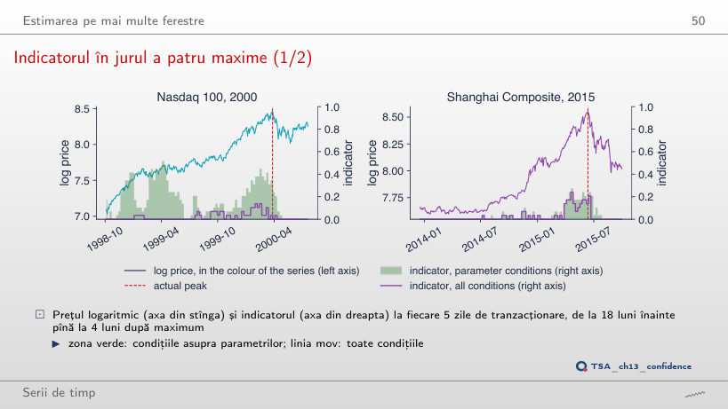
Răspuns
Nu: versiunea pe parametri atinge cel mult 0,28 (22 aprilie 2015). Cu pragul 0,2 apar 4 date cu alarmă înainte de maximum, din 15 aprilie 2015; pragul fixat dinainte decide dacă un semnal slab devine alarmă.
Indicatorul în jurul a patru maxime
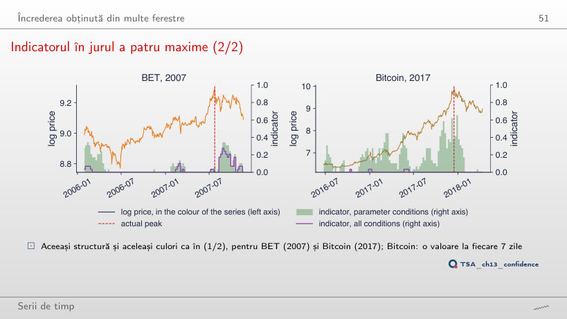
Răspuns
Pe 3 noiembrie 2017, cu șase săptămîni înainte de maximum (încă o dată pe 8 decembrie). Valoarea cea mai mare, 0,66, vine pe 29 decembrie 2017, după maximum: ea descrie creșterea deja încheiată.
Timpul critic se mută odată cu datele
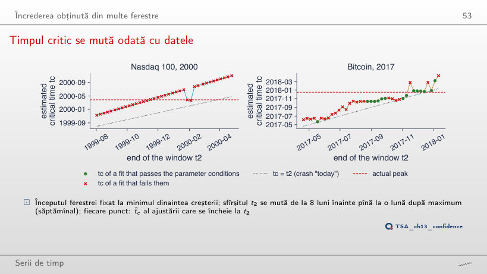
Răspuns
36 din 38: estimarea ar vrea un tc mai tîrziu decît permite căutarea, deci t̂c se mută odată cu t₂ doar pentru că limita se mută. La Bitcoin 2017 doar 3 din 39 ating limita; acolo 4 estimări stau exact pe dreapta tc = t₂, iar 11 la cel mult 20 de zile de ea.
O evaluare riguroasă a prognozei crahurilor
Alarmele pe tot eșantionul
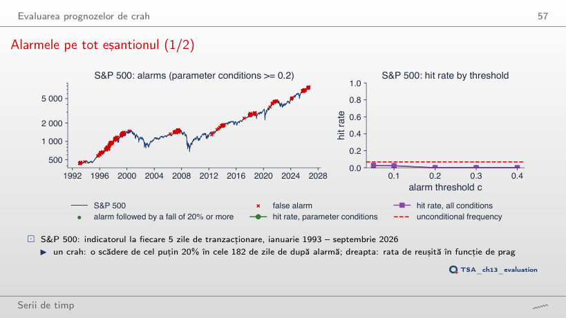
Răspuns
2,3% dintre date, față de 6,8% pentru 20%; rata de reușită după alarme rămîne 0%. Frecvența de bază depinde de definiția crahului, de aceea definiția trebuie fixată înainte de a compara alarmele cu ea.
Alarmele pe tot eșantionul
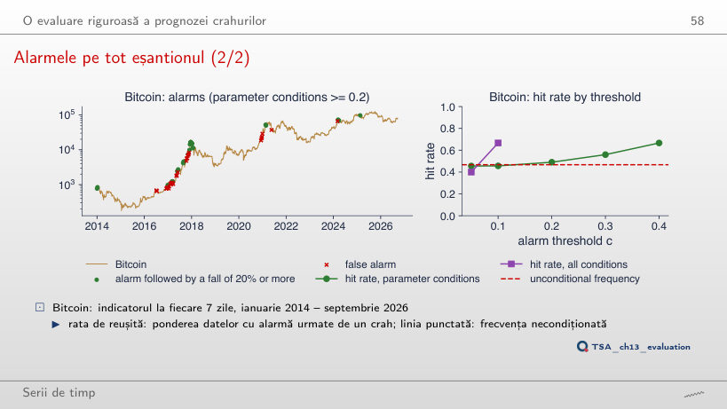
Răspuns
51%, față de 47% la 182 de zile; după o alarmă (c = 0,2) rata este 55%. Scăderile de 20% sînt atît de frecvente la Bitcoin încît aproape orice regulă pare să le prindă: comparația relevantă este cu frecvența de bază.
Interpretarea evaluării
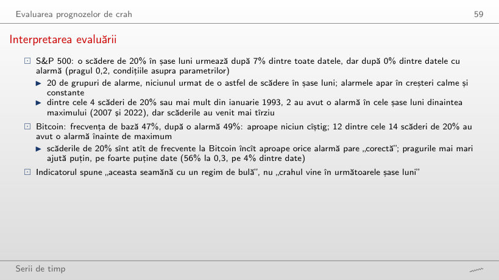
Răspuns
Rămîne sub ea: 16,9% față de 23,1%. Alarmele S&P 500 apar în creșteri calme și constante, după care scăderile, chiar și cele de 10%, sînt mai rare decît într-o zi oarecare.
Închiderile zilnice ale celor șase episoade și ale evaluării (S&P 500, Nasdaq 100, BET, Shanghai Composite, Bitcoin; data/market, EODHD) nu sînt revizuite și reproduc exact cifrele din curs; browserul găsește din nou minimul, maximul, scăderile, ratele de reușită și grupurile de alarme. Simulările capitolului: valoarea fundamentală și șocurile celor trei AR(1) (sămînța 2026), extragerile Normale și uniforme ale bulei Blanchard–Watson (sămînța 13), în ordinea în care le face codul capitolului. Testele ADF, SADF, GSADF și BSADF sînt calculate în browser din prețurile logaritmice săptămînale; valorile lor critice sînt cele Monte Carlo ale capitolului (1000 de mersuri aleatoare cu driftul 1/T, sămînța 2026), exportate cu cuantilele de 90%, 95% și 99%. Ajustările LPPL, cu testele Lomb și de rădăcină unitară ale reziduurilor, peisajul funcției de cost și seriile indicatorului (fișierele ch13_ci_*.csv) provin din codul capitolului; pasul liniar (OLS) al exemplului Shanghai este refăcut în browser. Variantele care nu apar în curs (alte orizonturi, alte valori ale lui r și π, alte niveluri și lungimi minime, alte date de sfîrșit ale ferestrei LPPL, alte limite ale filtrului și ale lui ω, alte praguri, alte definiții ale crahului) sînt rulări suplimentare ale codului capitolului pe aceleași date; graficele din „Interpretarea celor șase episoade”, „SADF, GSADF și BSADF”, „Exemplu rezolvat”, „Interpretarea testelor pentru Nasdaq 100”, „Interpretarea celor trei piețe”, „Oscilațiile log-periodice”, „Restricțiile parametrilor: filtrul”, „Interpretarea celor șase ajustări”, „Interpretarea ferestrelor” și „Interpretarea evaluării” sînt grafice suplimentare pentru slide-uri care dau doar cifre.